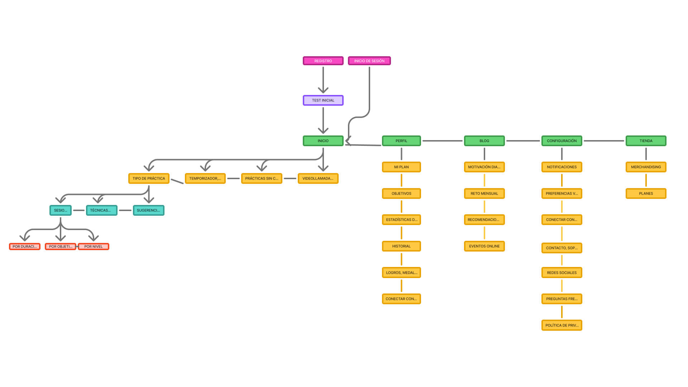
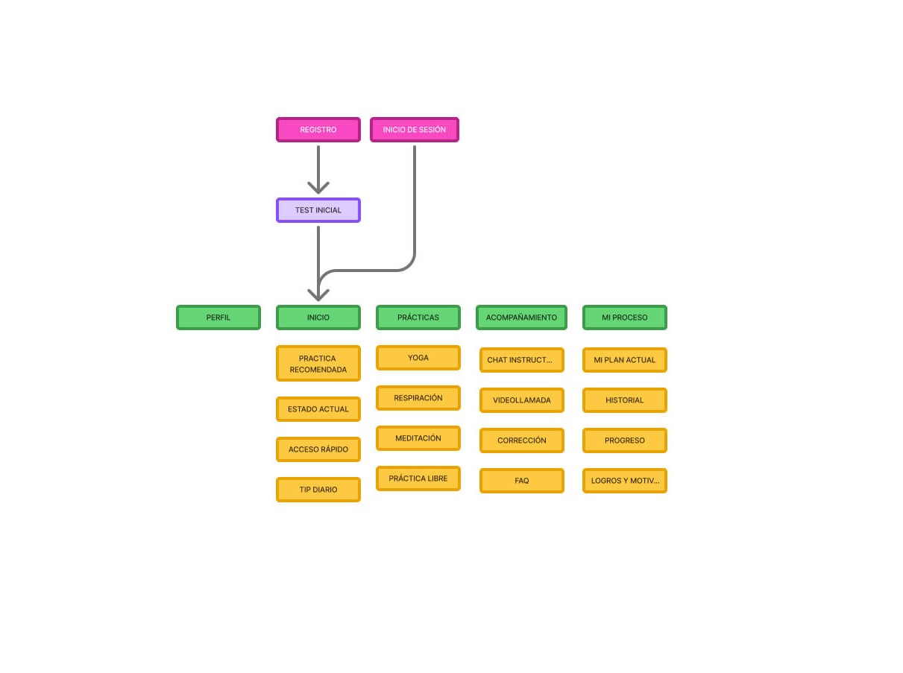
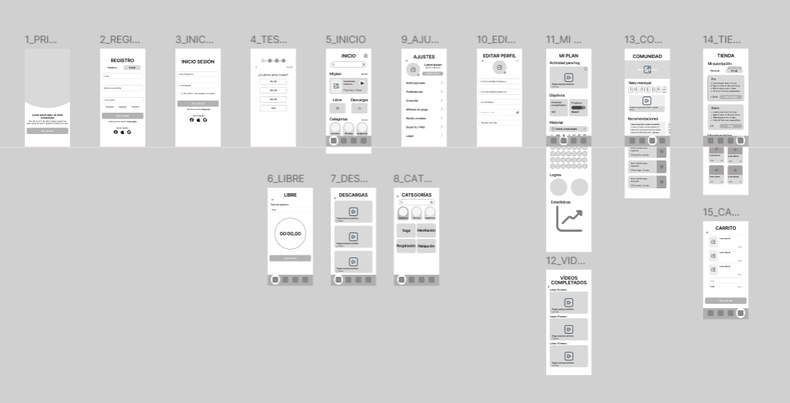
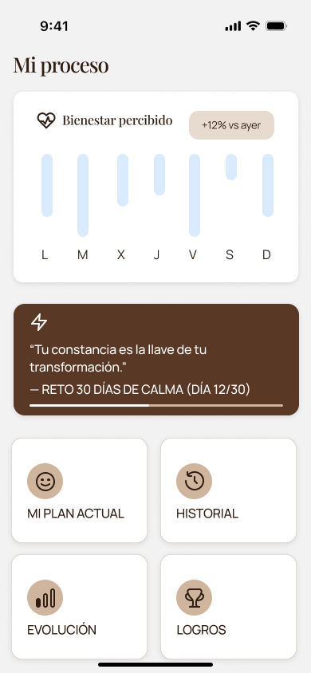
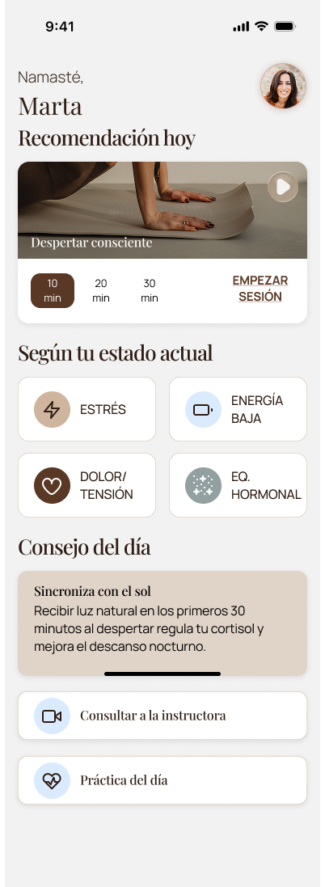
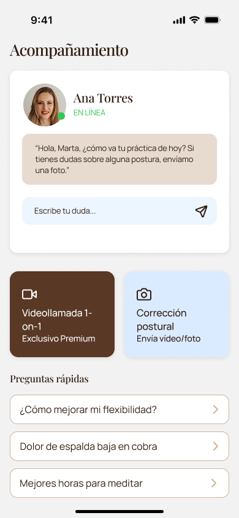
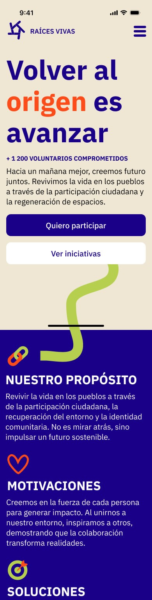
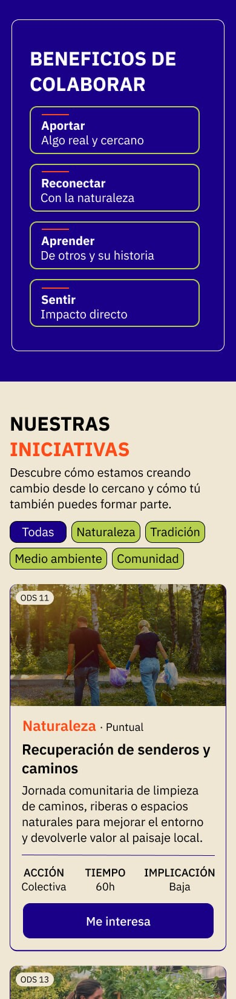
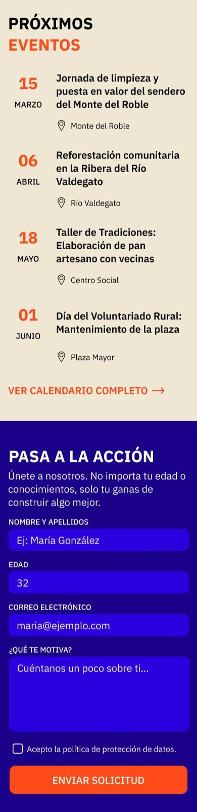

2024–2026
Advance Vocational Training in Interaction Design
IES Misteri d'Elx
I design digital products with a focus on clarity,
structure, and real user needs.
Hello!
I'm a hardworking designer who constantly seeks new skills and explores diverse design solutions to deliver the best result in every project. My background in translation has shaped the way I design interfaces, prioritising meaning, usability and clear communication across different contexts.
2024–2026
Advance Vocational Training in Interaction Design
IES Misteri d'Elx
2023–2024
Master's degree in Translation Technologies
Universitat Autònoma de Barcelona (UAB)
2019–2023
Degree in Translation and Interpreting
Universidad Autónoma de Madrid (UAM)
Academic Project






Academic Project
Project overview: Designed a community platform to connect hobby enthusiasts, share resources, and organize local events. The goal was to create a space that encourages interaction, discovery, and engagement while keeping navigation simple and intuitive.


